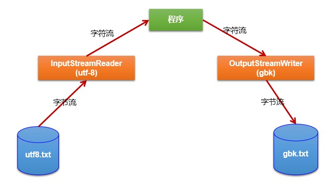

转换流的使用
1.转换流涉及到的类：属于字符流
InputStreamReader：将一个字节的输入流转换为字符的输入流
解码：字节、字节数组 --->字符数组、字符串
OutputStreamWriter：将一个字符的输出流转换为字节的输出流
编码：字符数组、字符串 ---> 字节、字节数组
说明：编码决定了解码的方式
2.作用：提供字节流与字符流之间的转换
3.图示：

4.典型实现：
@Test
public void test1() throws IOException {
FileInputStream fis = new FileInputStream("dbcp.txt");
// InputStreamReader isr = new InputStreamReader(fis);//使用系统默认的字符集
//参数2指明了字符集，具体使用哪个字符集，取决于文件dbcp.txt保存时使用的字符集
InputStreamReader isr = new InputStreamReader(fis,"UTF-8");//使用系统默认的字符集
char[] cbuf = new char[20];
int len;
while((len = isr.read(cbuf)) != -1){
String str = new String(cbuf,0,len);
System.out.print(str);
}
isr.close();
}
/*
此时处理异常的话，仍然应该使用try-catch-finally
综合使用InputStreamReader和OutputStreamWriter
*/
@Test
public void test2() throws Exception {
//1.造文件、造流
File file1 = new File("dbcp.txt");
File file2 = new File("dbcp_gbk.txt");
FileInputStream fis = new FileInputStream(file1);
FileOutputStream fos = new FileOutputStream(file2);
InputStreamReader isr = new InputStreamReader(fis,"utf-8");
OutputStreamWriter osw = new OutputStreamWriter(fos,"gbk");
//2.读写过程
char[] cbuf = new char[20];
int len;
while((len = isr.read(cbuf)) != -1){
osw.write(cbuf,0,len);
}
//3.关闭资源
isr.close();
osw.close();
}
5.说明：
//文件编码的方式（比如：GBK），决定了解析时使用的字符集（也只能是GBK）。